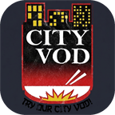

South Park: all episodes, clips, subtitles and resume
An unofficial, universal South Park Studios client in the authentic glossy iOS 6 look. Watch all full episodes from Season 1 to Season 27+, clips, and specials with synchronized WebVTT subtitles, playback resume, background audio, and act chapters. Parody tribute to City Wok ("Try our City VOD!"). Ships its own Mbed TLS stack and local proxy for modern CDN compatibility on iOS 6.
Unofficial apps by samcejko, not affiliated with or endorsed by Twitch, Google, Apple, TikTok, Instagram, Meta, Spotify, Kick, NVIDIA, Mojang, Microsoft, OpenRouter, Vine, X, diVine or the Moonlight, Sunshine and Apollo projects.